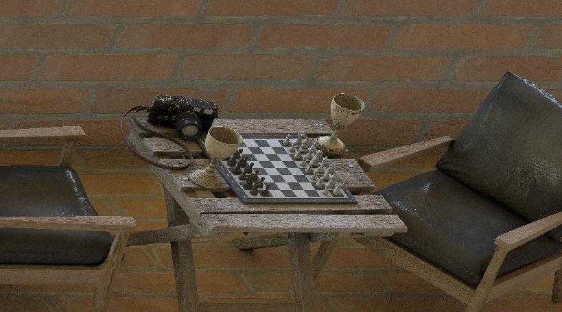
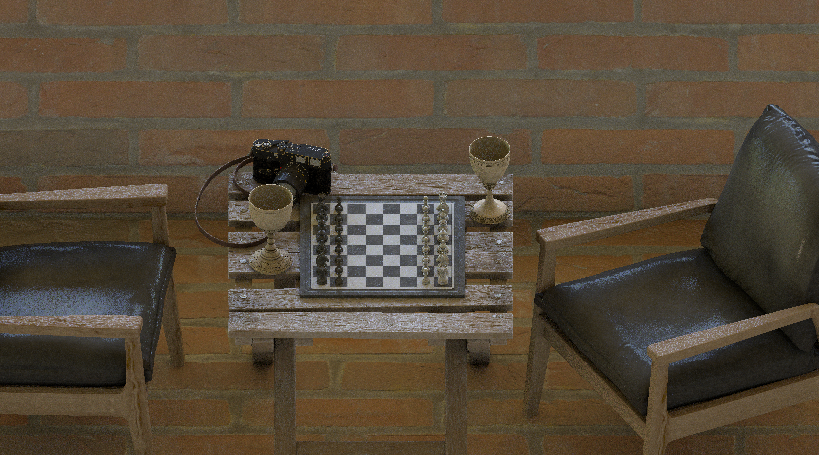
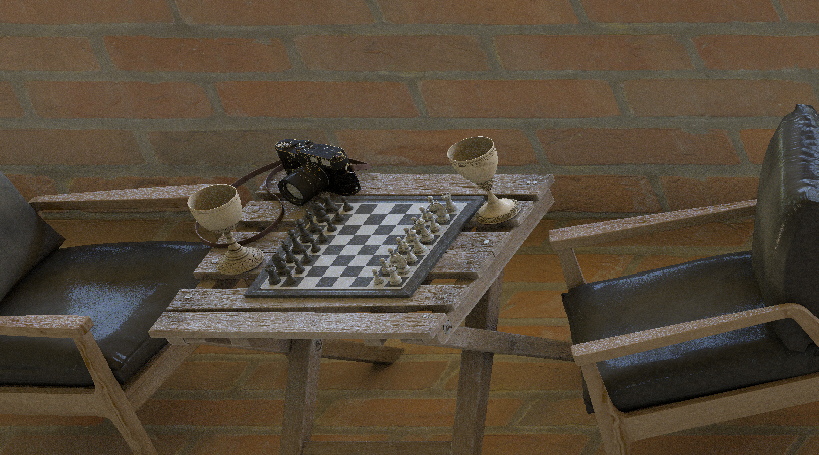
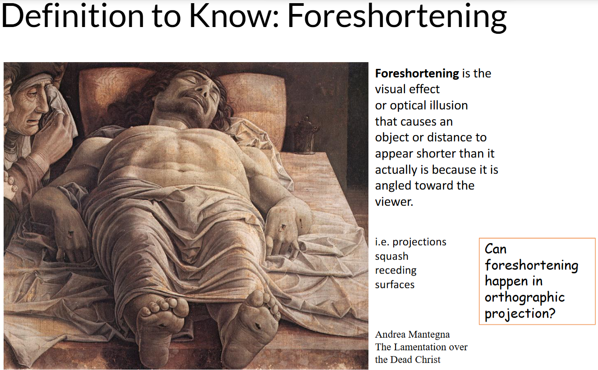
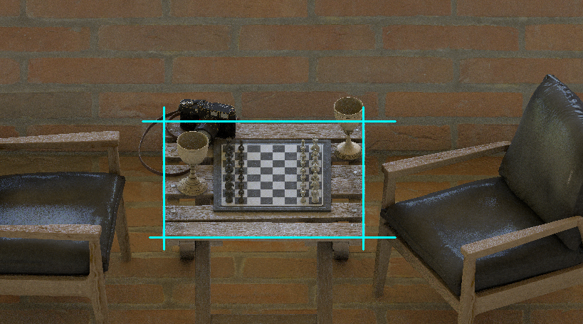
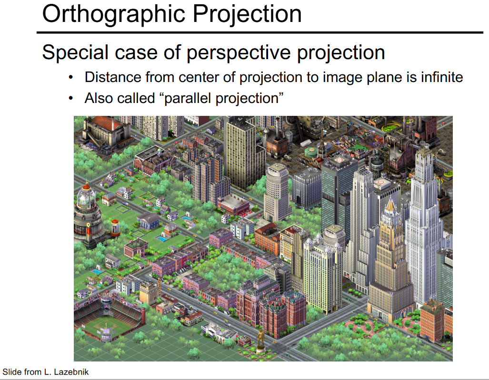

In the paper that gave birth to ArUco markers, Sergio Garrido Jurado et al did camera pose estimation to test their fiducial marker. They applied the camera pose estimation to project a virtual scene on their fiducial marker, whereas we applied camera pose estimation to simulate real-world photos. The figure below shows the virtual scene they used.

When I saw that green character in the scene, my reaction was:

but could not remember who. The whole paper referred to it as merely a "virtual character": the audacityyyy. There was another figure in the paper that gave a better look at the character:

We shall do a better job at citation.
The chess scene you saw in this page is an artwork by Matthew Colbourne using the following assets from Polyhaven:
 camera model
camera model
 folding wooden stool model
folding wooden stool model
 modern arm chair model
modern arm chair model
 chess set model
chess set model
 brass goblets model
brass goblets model
 red brick texture
red brick texture
According to Matt, he used a Python code written by Saad Equbal to generate a quilt of the scene. The Python code implements a method devised in the paper by Wells and Hamilton: Having generated a light field image, they needed to develop a method to view the generated images. This began with generating 2D images from the light field based on orthographic projections of the light field (taking a single pixel from each hogel all corresponding to the same light ray angle). The quilt was displayed on a 16-inch Looking Glass display.
The simulator was developed by VACLAB. The camera pose estimation was done by Arnob - oh hi, that's me.
But observe the tiles in the quilt — that is, the frames in the animation above.

left

middle

right
The middle tiles correspond to direction dx ≈ D/2 — all hogels looking straight ahead (θ ≈ 0). The left/right tiles correspond to extreme angles (θ ≈ ±θ_max).

.png)

By the Web Art Academy definition of "foreshortening", Christ is foreshortened in the painting: I mean, yeah, there's a reason the painting is also known as "Foreshortened Christ". By that logic there is foreshortening on the wooden stool in the quilt too. Yet I said "no foreshortening": yet something seems off in both the painting and the quilt — easier to notice when the foreshortening is on a simple shape as a square, way more difficult to catch when it appears in human form. Do you see it?
Notice Christ's feet. Now compare those feet with his head. If drawn correctly the feet would be much larger since they are closer to us, but Mantega painted both almost the same size.
While Jill Jeffers Goodell thinks this was his intention, she used the painting by Mantegna as an excellent example, in the blog, of how tricky foreshortening can be. Foreshortening's success often depends upon a point of view or perspective in which the sizes of near and far parts of a subject contrast greatly.

Goodell cited the Artcyclopedia glossary for the definition of "foreshortening" and this definition is what I meant by "no foreshortening" — there is no foreshortening based on distance from a viewpoint. Now if you look carefully you will see that the left/right tiles are no better. There is equally no foreshortening. The objects are not in true perspective, because they do not correspond to any view of an object that can be obtained in practice. You realise that at a glance you only get an optical illusion that makes the stool "look better" at extreme angles. At extreme angles, the 3D shape of the stool itself creates perspective-like cues — you see the side panels, legs become prominent... So those tiles accidentally look more correct.


The Python code does a light field assembly — one pixel per hogel at a fixed direction. This produces an orthographic view at center direction.
Only at center direction? What view is produced at other directions — say at extreme angles? Depends on your definition of "orthographic projection." The CS418 lecture would argue that a view at any other direction is produced by oblique parallel projection which is different from an orthographic projection where the projectors are orthogonal to the view plane. The Wells and Hamilton paper would not differentiate between orthographic and oblique parallel projections: they never used the term "parallel projection" but they used the definition of parallel projections to explain what they meant by "orthographic projections".
Is this a university thing as CS418 is from Illinois while Wells and Hamilton are from MUN? That's what my initial thought was till I found the lecture from Spring 2023 offering of ECE549 from Illinois university. Far from differentiating orthographic from general parallel projection, the lecture claims that parallel and perspective views are not like chalk and cheese as one may think — rather, parallel projection is just a special case of perspective projection — now who saw that coming! Interesting. We shall broaden our project to include perspective projection. But seems like a lame justification to include a feature just because we can — would a light field display ever require generation of perspective views?

In 2025, the paper showcased a demo running on a desktop equipped with a Looking Glass 16” Light Field Display, the same light field display we had used. According to them, light field displays require the generation of multiple perspective views to reconstruct the full light field. Generation of a perspective view requires a Unity-inspired camera that can cast a ray and fetch information about what the ray hits.
This requires knowing the camera distance and light field attributes — parameters not in the original script at all. That's why it can't be fixed with a simple line change.
Although in the paper they applied their fiducial markers for camera pose estimation, the OpenCV implementation of ArUco does not track the camera but tracks the fiducial object. Tracking an object using a camera means continuously identifying its location when either the object or the camera are moving. 3D tracking aims at continuously recovering all six degrees of freedom that define the camera position and orientation relative to the scene, or, equivalently, the 3D displacement of an object relative to the camera. Now given the figures of the virtual scene the paper contains, some 3D tracking obviously took place but we do not know which API they used, or in what format the API took the six degrees of freedom to give the virtual scene. Did they feed the pose of the camera to the API or did they feed the pose of the object to the API? Not sure if "API" is the proper term but I am using it in the sense that 3D tracking must be one program and projecting a virtual scene must be another so there may be an "API" connecting these two. Is the program that projects the virtual scene made by them from scratch? Well those are some of the questions we will never know the answers to, at least not through their paper. I guess there were people who realised this before me and so in the video where Jurado demonstrates ArUco there are comments - asking for the source code - that are not attended to.
By the way, when I say we will never know how they used their 6 DoFs to project their virtual scene, I do not mean we will never know how to do the same thing they did. There is this video where Kevin Wood overlays a 3D model Baby Yoda on a real scene. Before you jump to that video, I am letting you know that they don't give away the code in the video because they are selling their source code.

Can't always expect altruism in the capitalist world, can we? But sometimes, it's Christmas:

pip install opencv-contrib-python==4.8.1.78 numpy), they don’t bundle OGRE3D. That’s why ovis isn’t part of the wheels you can install from PyPI.
The ovis module has a class WindowScene which is the associated scene and a 3D viewport caused by its virtual camera.
The ovis module works very well with the aruco module. OpenCV gives us the pose of the fiducial object with respect to the camera, not the camera pose with respect to the object.
But to the setCameraPose() method of WindowScene, if we pass the pose from the aruco module and set the boolean argument invert=True, ovis does the calculations behind its veil and finds the camera pose.
If we then want to know the pose of the camera, the class includes a method getCameraPose().
Maybe in a lot of projects out there but not in ours. As a programmer, I would find ovis convenient for this project but it would also burden the project with a heavy dependency. The project currently does not demand a 3D rendering, at least not a rendering that demands an Ogre window, so given the state of this project ovis has been avoided.
Sure, if you want to put it that way, let's take a look at their tutorial. According to ChArUco Pose Estimation official tutorial by OpenCV, the coordinate system of the CharucoBoard is placed in the board plane with the Z axis pointing out, and centered in the bottom left corner of the board. According to the MATLAB reference for generateCharucoBoard function, the top-left corner value represents the origin of the board. Maybe MATLAB's implementation of ChArUco is different from that of OpenCV, right? Yes and no, let's clarify this.
ChArUco came to MATLAB only in 2024. By 2024 OpenCV saw a lot of changes in its ChArUco but the "bottom left" remained like a zombie in every version of the tutorial (last checked 2025-08-31). Let us spot the grave of this "bottom left" to lay its soul to rest.
 Charuco Board Axis. OpenCV version 4.5.5
Charuco Board Axis. OpenCV version 4.5.5
 Charuco Board Axis. OpenCV version 4.6.0
Charuco Board Axis. OpenCV version 4.6.0
Both images are of the same ChArUco board in the same orientation. For 4.5.5 image we can see that indeed the coordinate system of the CharucoBoard is placed in the board plane with the Z axis pointing out, and centered in the bottom left corner of the board. But in 4.6.0 the coordinate system of the CharucoBoard is placed in the board plane:
The man behind this change is Alexander Panov who fixed the object points order in ChArUco board.